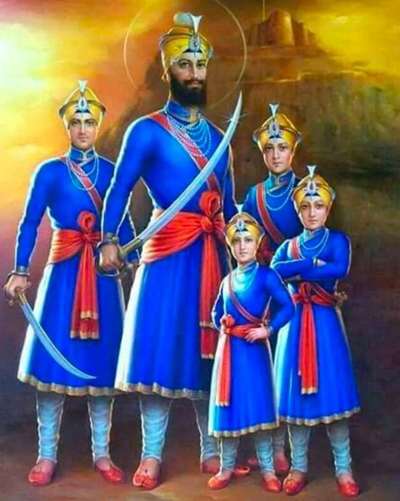

Char Sahibzade - The Martyrdom of Guru Gobind Singh's Sons
Sahibzada means "son" in Punjabi, and it is a traditional term, not commonly used in everyday language today. It is most reverently associated with the four sons of Guru Gobind Singh, the tenth Sikh Guru. The plural form of Sahibzada is Sahibzade, with a stretched "A" sound at the end.
The younger pair, known as the Chotta Sahibzade, were martyred together at Sirhind by the Mughal forces at the tender ages of 6 and 9 years old. The older Sahibzade, known as the Vaada Sahibzade, were martyred in battle at Chamkaur Sahib, fighting with valor against overwhelming odds, at the young ages of 14 and 18 years old.
Char Sahibzade
Char Sahibzade, meaning "Four Sons," refers to the four sons of Guru Gobind Singh, all of whom made the ultimate sacrifice for the faith while still very young. These sons are remembered and revered by Sikhs, and their martyrdom is an essential part of Sikh history.
The Martyrdom
The martyrdom of the Sahibzade is commemorated every year in December, with deep sorrow and respect. The dates 21st and 26th December are particularly significant for Sikhs worldwide, as it was on these days in 1705 that Baba Ajit Singh and Baba Jujhar Singh, the older Sahibzade, left for their heavenly abode on the 21st. On the 26th, the younger Sahibzade, Baba Zorawar Singh and Baba Fateh Singh, were tragically martyred by the Mughal forces of Sirhind.
Char Sahibzade
Remembering the four Sahibzade: Baba Ajit Singh, Baba Jujhar Singh, Baba Zorawar Singh, Baba Fateh Singh
December 21st & 26th, 1705 – In eternal remembrance.